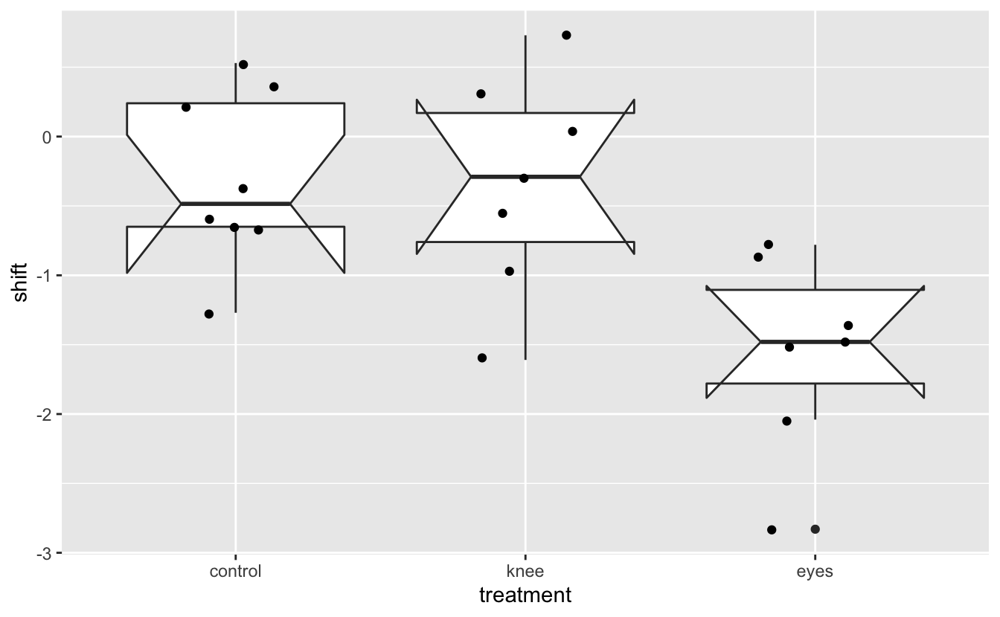
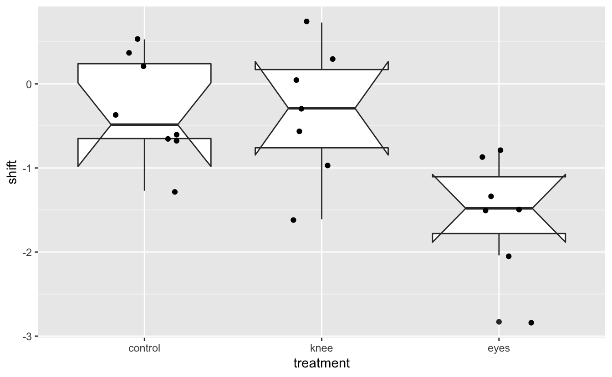
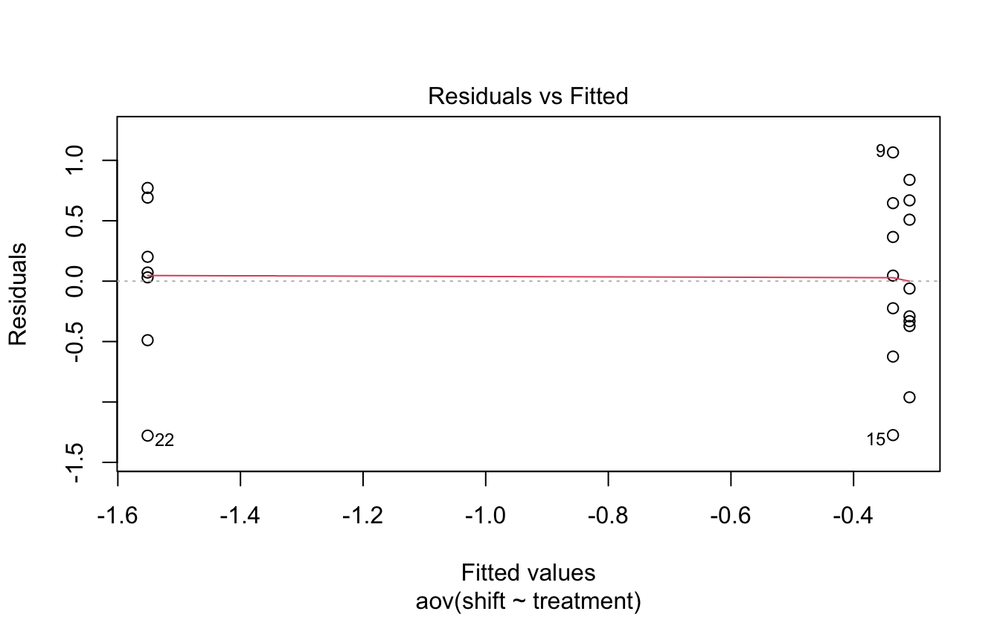
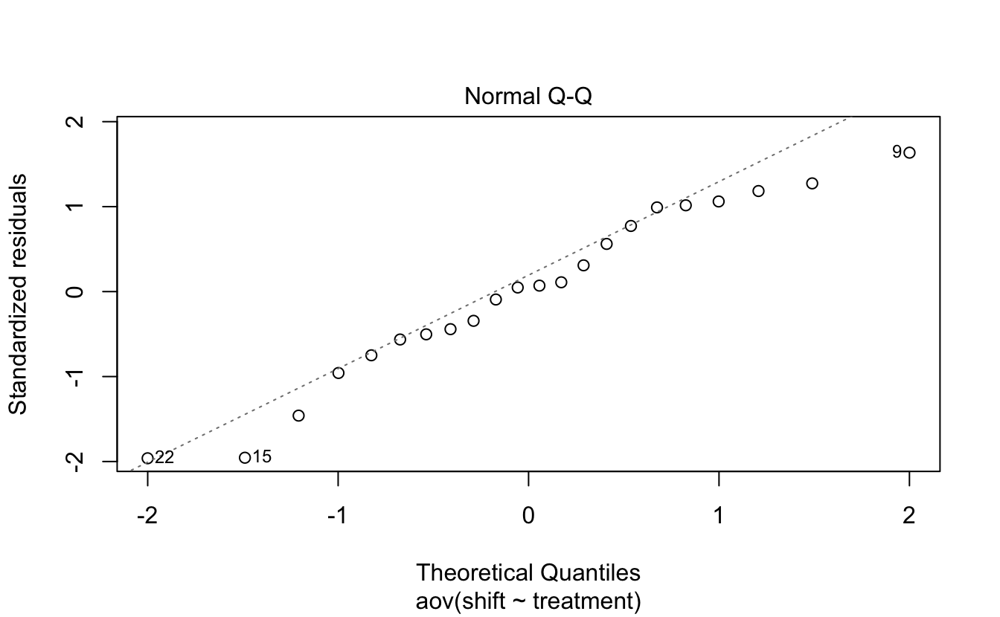
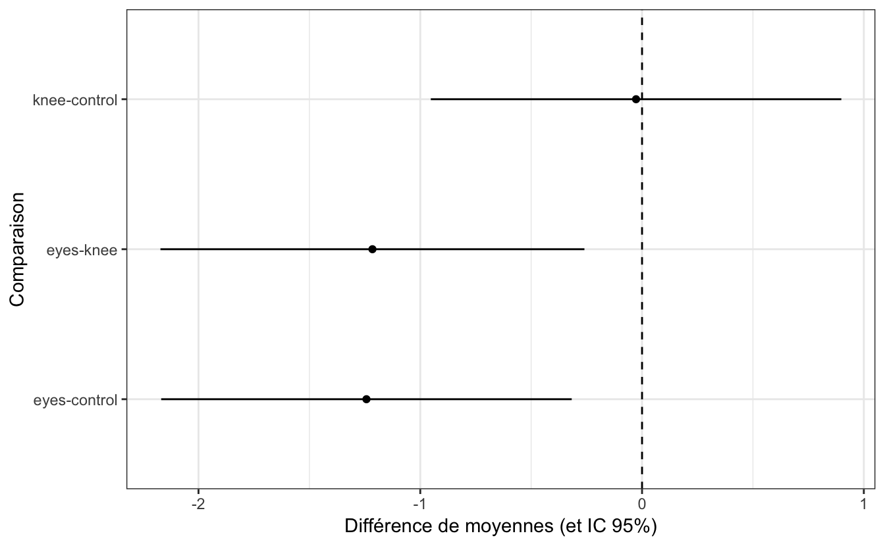

4 Séance 3 : comparer la moyenne de plus de 2 groupes
4.1 Packages et données
Avant toute chose, merci de relire l’introduction (section 2) de ce document, et de suivre toutes les étapes qui y sont décrites (création d’un nouveau sous-dossier nommé TP_2 dans votre dossier Biometrie3, changement du répertoire de travail et création d’un nouveau script).
Les packages dont vous aurez besoin pour cette séance, et que vous devez donc charger en mémoire, sont les mêmes que pour la section précédente : les packages du tidyverse (Wickham, 2019), qui permettent de manipuler facilement des tableaux de données et de réaliser des graphiques, le package readr (Wickham & Hester, 2020), pour importer facilement des fichiers .csv au format tibble, le package readxl (Wickham & Bryan, 2019), pour importer facilement des fichiers Excel au format tibble, le package skimr (Waring et al., 2020), qui permet de calculer des résumés de données très informatifs, et le package car (Fox et al., 2020), qui permet d’effectuer le test de comparaison de variances de Levene. Nous utiliserons aussi le package broom (Robinson et al., 2020), qui fait partie du tidyverse mais qu’il faut charger explicitement. La fonction tidy() de ce package nous permettra de “ranger” correctement les résultats de tests dans un tibble :
library(tidyverse)
library(readr)
library(readxl)
library(skimr)
library(car)
library(broom)Enfin, nous aurons besoin du package DescTools (Signorell, 2020) afin de réaliser un test spécifique de comparaisons multiples. N’oubliez pas de l’installer si nécessaire, avant de le charger en mémoire :
library(DescTools)Ces commandes (que vous devez taper dans vos scripts avant de les exécuter dans la console de RStudio) ne devraient pas renvoyer de messages d’erreur puisque vous avez dû les installer pour reproduire les exemples et réaliser les exercices de la séance 1. Si vous rencontrez des problèmes, merci de consulter la section 3.1 de cet ouvrage, ainsi que la section 2.3 du livre de biométrie 2 disponible en ligne.
Vous aurez également besoin des jeux de données suivants :
4.2 L’analyse de variance à un facteur
4.2.1 Exploration préalable des données
Voyager dans un pays éloigné peut faire souffrir de décallage horaire. Habituellement, la resynchronisation de l’horloge interne circadienne dans le nouveau fuseau horaire est réalisée grâce à la perception de la lumière
par les yeux. Ce changement progressif du rythme de notre horloge interne est appelé “décalage de phase.” Ce phénomène a été étudié par 2 chercheurs en 1998 (Campbell & Murphy, 1998), qui ont montré que ce décallage de phase pouvait également être obtenu en exposant des sujets à la lumière, non pas au niveau de leurs yeux, mais au niveau de leur fosse (ou creux) poplitée, c’est-à-dire, derrière les genoux.
Cette découverte a été vivement critiquée par certains, et saluée comme une découverte majeure par d’autres. Toutefois, certains aspects du design expérimental de l’étude de 1998 ont été mis en doute en 2002 : il semble en effet que lors de l’exposition du creux poplité, les yeux de certains patients ont été également exposés à de faibles intensités lumineuses. Pour vérifier les trouvailles de Campbell et Murphy, Wright et Czeisler (Wright & Czeisler, 2002) ont ré-examiné ce phénomène. La nouvelle expérience a évalué les rythmes circadiens en mesurant les cycles quotidiens de production de mélatonine chez 22 participants placés au hasard dans 3 groupes. Les patients étaient réveillés en pleine nuit et exposés :
- Soit à 3 heures de lumière appliquée exclusivement derrière leurs genoux (groupe
knee). - Soit à 3 heures de lumière appliquée exclusivement à leurs yeux (groupe
eyes). - Soit à 3 heures d’obscurité totale (groupe
control).
Le décalage de phase du cycle de production de mélatonine était mesuré 48h plus tard. Des chiffres négatifs indiquent un retard de production de mélatonine. C’est l’effet théorique attendu du traitement lumineux administré. Un décalage de phase positif indique une production de mélatonine plus précoce. Une absence de changement se traduit par un décalage de phase de 0.
4.2.1.1 Importation et examen visuel
Les données brutes de cette étude sont fournies dans le fichier Light.csv. Importez ces données dans RStudio et examinez les données brutes grâce à la fonction View().
Light# A tibble: 22 x 2
treatment shift
<chr> <dbl>
1 control 0.53
2 control 0.36
3 control 0.2
4 control -0.37
5 control -0.6
6 control -0.64
7 control -0.68
8 control -1.27
9 knee 0.73
10 knee 0.31
# … with 12 more rowsLe tableau obtenu est-il au format long ou au format court/large ? Pourquoi un tableau au format suivant n’aurait-il pas de sens ?
# A tibble: 8 x 3
control eyes knee
<dbl> <dbl> <dbl>
1 0.53 -0.78 0.73
2 0.36 -0.86 0.31
3 0.2 -1.35 0.03
4 -0.37 -1.48 -0.290
5 -0.6 -1.52 -0.56
6 -0.64 -2.04 -0.96
7 -0.68 -2.83 -1.61
8 -1.27 NA NA Lorsque l’on réalise une analyse de variance, puisque les effectifs ne sont pas nécessairement identiques dans tous les groupes (c’est ce qu’on appelle un design déséquilibré, ou “unbalanced design”), présenter les tableaux au format long est indispensable. Par ailleurs, notez que les ANOVAs réalisées sur des “balanced design” (ou designs équilibrés, pour lesquels tous les groupes sont de même taille), sont beaucoup plus puissantes que les ANOVAs réalisées sur des “unbalanced designs.”
Ici, le tableau de données est très simple (et de petite taille). Il n’y a pas de données manquantes et aucune création de nouvelle variable n’est nécessaire. La seule modification que nous devrions faire est de transformer la variable treatment en facteur :
Light <- Light %>%
mutate(treatment = factor(treatment))Comme toujours, les niveaux du facteur sont automatiquement classés par ordre alphabétique :
levels(Light$treatment)[1] "control" "eyes" "knee" Pour les statistiques descriptives et les graphiques qui viendront après, nous souhaitons indiquer l’ordre suivant : control, puis knee, puis eyes :
Light <- Light %>%
mutate(treatment = fct_relevel(treatment, "control", "knee", "eyes"))
Light# A tibble: 22 x 2
treatment shift
<fct> <dbl>
1 control 0.53
2 control 0.36
3 control 0.2
4 control -0.37
5 control -0.6
6 control -0.64
7 control -0.68
8 control -1.27
9 knee 0.73
10 knee 0.31
# … with 12 more rowsLight$treatment [1] control control control control control control control control knee
[10] knee knee knee knee knee knee eyes eyes eyes
[19] eyes eyes eyes eyes
Levels: control knee eyesAttention à bien respecter la casse (le respect des majuscules/minuscules est toujours aussi important dans R).
4.2.1.2 Statistiques descriptives
Comme toujours, et maintenant que nos données sont au bon format, il est nécessaire d’examiner quelques statistiques descriptives pour chaque catégorie étudiée. Le plus simple est ici d’utiliser la fonction skim du package skimr :
Light %>%
group_by(treatment) %>%
skim()── Data Summary ────────────────────────
Values
Name Piped data
Number of rows 22
Number of columns 2
_______________________
Column type frequency:
numeric 1
________________________
Group variables treatment
── Variable type: numeric ──────────────────────────────────────────────────────
skim_variable treatment n_missing complete_rate mean sd p0 p25
1 shift control 0 1 -0.309 0.618 -1.27 -0.65
2 shift knee 0 1 -0.336 0.791 -1.61 -0.76
3 shift eyes 0 1 -1.55 0.706 -2.83 -1.78
p50 p75 p100 hist
1 -0.485 0.24 0.53 ▂▇▂▁▇
2 -0.290 0.17 0.73 ▃▃▇▃▇
3 -1.48 -1.10 -0.78 ▂▂▁▇▅Nous avons ici la confirmation que le design expérimental n’est pas équilibré, puisque le groupe control compte un individu de plus. Il semble que le groupe eyes se comporte un peu différemment des autres groupes. En effet, pour les groupes control et knee, les valeurs observées sont très proches :
- les moyennes et les médianes sont négatives mais proches de 0.
- les valeurs observées sont négatives pour certaines, et positives pour d’autres (la colonne
p0contient les minimas et la colonnep100contient les maximas).
En revanche, pour le groupe eyes, les décalages de phase observés sont tous négatifs (le maximum, présenté dans la colonne p100 vaut -0.78) et la moyenne est près de 5 fois plus faible que pour les 2 autres groupes.
Les écart-types semblent en revanche très proches dans les 3 groupes (entre 0.6 et 0.8).
Enfin, les histogrammes présentés pour chaque groupe semblent très éloignés d’une distribution Normale. C’est logique compte tenu des faibles effectifs dans chaque groupe. Nous verrons plus tard que cela n’a aucune importance puisque les conditions d’application de l’ANOVA portent sur les résidus de l’ANOVA, et pas sur les données brutes.
Il semble donc que seul le groupe eyes soit véritablement différent du groupe témoin. Pour le vérifier, nous allons d’abord faire quelques représentations graphiques, puis nous ferons un test d’hypothèses.
4.2.1.3 Exploration graphique
Comme toujours, il est indispensable de regarder à quoi ressemblent les données brutes sur un ou des graphiques. Les statistiques descriptives ne racontent en effet pas toujours toute l’histoire. Ici, nous allons superposer les données brutes, sous forme de nuage de points, aux boites à moustaches :
Light %>%
ggplot(aes(x = treatment, y = shift)) +
geom_boxplot(notch = TRUE) +
geom_jitter(width = 0.2)notch went outside hinges. Try setting notch=FALSE.
notch went outside hinges. Try setting notch=FALSE.
notch went outside hinges. Try setting notch=FALSE.
Puisqu’il y a peu de données, les intervalles de confiance à 95% sont très larges. Ils dépassent d’ailleurs presque systématiquement les quartiles, ce qui explique l’apparence bizarre des boîtes à moustaches et les messages d’avertissement affichés lors de la création du graphique. Il vaudait donc mieux représenter cette figure sans ces intervalles de confiance. Toutefois, avant de les retirer, on peut constater ici que les IC 95% se chevauchent complètement pour les séries control et knee. En revanche, il n’y a aucun chevauchement de l’IC 95% du groupe eyes avec les 2 autres groupes. On s’attend donc à trouver une différence de moyenne significative entre le groupe eyes d’une part, et les groupes control et knee d’autre part, mais pas de différence de moyenne entre les groupes control et knee.
Light %>%
ggplot(aes(x = treatment, y = shift, fill = treatment)) +
geom_boxplot() +
geom_jitter(width = 0.2) +
theme_bw() +
scale_fill_brewer() +
labs(x = "",
y = "Décalage de phase") +
theme(legend.position = "none")
On constate ici visuellement que les 3 séries ont une étendue à peu près similaire, et que le groupe eyes semble se distinguer des 2 autres par des valeurs plus faibles. Enfin, les boîtes contenant 50% des valeurs centrales (donc l’étendue des valeurs entre les premiers et troisièmes quartiles) recouvrent le 0 pour les 2 groupes control et knee, mais par pour eyes.
4.2.2 Le test paramétrique
Le test paramétrique permettant de comparer la moyenne de plusieurs populations en une seule étape est l’analyse de variance à un facteur. Contrairement aux tests que nous avons vus jusqu’à maintenant, les conditions d’application de ce test ne seront vérifiées qu’après avoir réalisé l’analyse. En effet, les conditions d’application de l’ANOVA ne se vérifient pas sur les données brutes mais sur les résidus de l’ANOVA. C’est d’ailleurs ce que l’on appelle l’analyse des résidus, ou diagnostique de l’ANOVA.
4.2.2.1 Réalisation du test et interprétation
Dans R, l’analyse de variance se fait grâce à la fonction aov() (comme “Analysis Of Variance”). La syntaxe est la même que pour un certain nombre de tests déjà vus dans la section 3 : il faut fournir une formule à la fonction. On place la variable numérique expliquée à gauche du ~, et à droite, la variable qualitative explicative (le facteur).
Contrairement aux autres tests réalisés jusqu’ici, les résultats du test devront être sauvegardés dans un objet. Outre les résultats du test, cet objet contiendra également tous les éléments permettant de vérifier si les conditions d’application de l’ANOVA sont réunies ou non.
Les hypothèses testées sont les suivantes :
- H\(_0\) : les moyennes de toutes les populations sont égales (\(\mu_{\textrm{control}} = \mu_{\textrm{knee}} = \mu_{\textrm{eyes}}\)).
- H\(_1\) : toutes les moyennes ne sont pas égales. Au moins l’une d’entre elles diffère des autres.
# Réalisation de l'ANOVA 1 facteur
res <- aov(shift ~ treatment, data = Light)
# Affichage des résultats
resCall:
aov(formula = shift ~ treatment, data = Light)
Terms:
treatment Residuals
Sum of Squares 7.224492 9.415345
Deg. of Freedom 2 19
Residual standard error: 0.7039492
Estimated effects may be unbalancedL’affichage des résultats bruts ne nous apprend que peu de choses. En revanche, la fonction summary() donne la réponse du test :
summary(res) Df Sum Sq Mean Sq F value Pr(>F)
treatment 2 7.224 3.612 7.289 0.00447 **
Residuals 19 9.415 0.496
---
Signif. codes: 0 '***' 0.001 '**' 0.01 '*' 0.05 '.' 0.1 ' ' 1Pour le facteur étudié, on obtient le nombre de degrés de libertés (Df), la somme des carrés (Sum Sq), les carrés moyens (Mean Sq), la statistique du test (F) et la \(p\)-value (Pr(>F)). Ici, la \(p\)-value est inférieure à \(\alpha\), donc on rejette H\(_0\). Au moins l’une des moyennes est différente des autres.
4.2.2.2 Conditions d’application
Les résultats de l’ANOVA ne seront valides que si les conditions d’application sont vérifiées. Comme indiqué plus haut, ces conditions d’application doivent être vérifiées sur les résidus de l’ANOVA, donc nécessairement après avoir réalisé l’analyse. Les résidus de l’ANOVA représentent l’écart entre chaque observation et la moyenne de son groupe. Les résidus doivent :
- Être indépendants.
- Être homogènes.
- Être distribués normalement.
L’indépendance des résidus signifie que connaître la valeur d’un résidu ne permet pas de prédire la valeur d’un autre résidu. Si les données ont été collectées correctement (échantillonnage aléatoire simple, indépendance des observations), on considère généralement que cette condition est vérifiée. Les 2 autres conditions d’application se vérifient soit graphiquement, soit avec un test d’hypothèses.
L’homogénéité des résidus signifie que les résidus doivent avoir à peu près la même variance pour chacun des groupes comparés. On peut vérifier que cette condition d’application est vérifiée grâce à ce graphique :
plot(res, which = 1)Ici, les résidus sont considérés comme homogènes car nous avons à peu près autant de résidus positifs que négatifs et que la ligne rouge est très proche du 0. L’étalement des résidus est à peu près le même de la gauche à la droite du graphique. On pourrait donc faire entrer les résidus dans une boite rectangulaire horizontale centrée sur le 0 et de la même largeur d’un bout à l’autre du graphique. Une autre façon de visualiser ces résidus est d’utiliser le graphique suivant :
plot(res, which = 3)
Sur ce graphique, ce qui compte principalement, c’est la droite en rouge. Elle est ici presque horizontale, ce qui montre que les résidus de tous les groupes (un groupe à gauche et 2 à droite) ont à peu près même moyenne.
Cette condition d’homogénéité des résidus entre les groupes peut également être vérifiée grâce au test de Levene. Pour ce test, les hypothèses seront les suivantes :
- H\(_0\) : les résidus sont homogènes (i.e. identiques dans tous les groupes).
- H\(_1\) : les résidus ne sont pas homogènes (i.e. au moins un groupe présente des résidus dont la variance est différente des autres).
leveneTest(res$residuals ~ Light$treatment)Levene's Test for Homogeneity of Variance (center = median)
Df F value Pr(>F)
group 2 0.1586 0.8545
19 Ici, puisque \(p > \alpha\), on ne peut pas rejeter l’hypothèse nulle. Les résidus sont donc bien homogènes.
Reste à vérifier la normalité des résidus. Là encore, on peut faire cela graphiquement ou avec un test de Shapiro-Wilk :
plot(res, which = 2)
Sur un graphique quantile-quantile comme celui-là, on considère que les observations sont distribuées normalement si les points sont bien alignés sur la droite. Ici, la plupart des points sont très proches de la droite, ce qui laisse penser que les résidus suivent bien la loi Normale. On peut en avoir la confirmation avec le test suivant :
shapiro.test(res$residuals)
Shapiro-Wilk normality test
data: res$residuals
W = 0.95893, p-value = 0.468Comme pour tous les tests de Shapiro-Wilk, l’hypothèse nulle est la normalité des observations. Ici, puisque \(p > \alpha\), on ne peut pas rejeter H\(_0\). Les résidus suivent donc bien la loi Normale.
Toutes les conditions d’application de l’ANOVA sont donc vérifiées. Nous avions donc bien le droit de la réaliser et ses résultats sont valides. On pourrait rédiger les résultats de cette analyse ainsi :
Une analyse de variance montre que la moyenne des 3 groupes n’est pas identique (\(F = 7.289\), \(p = 0.004\)). Un test de Levene a permis de vérifier la condition d’homogénéité de la variance des résidus (\(F = 0.189\), \(p = 0.855\)), et un test de Shapiro-Wilk a confirmé la normalité des résidus (\(W = 0.959\), \(p = 0.468\)).
Dernière chose, il est possible de produire les 3 graphiques ci-dessus (et même un quatrième que nous ne décrirons pas ici), en une seule commande :
plot(res)Il faut alors presser la touche Entrée de votre clavier pour afficher successivement les 4 graphiques produits.
À l’issue de cette analyse, deux questions restent en suspens :
- Entre quels groupes les moyennes sont-elles différentes ?
- Quelle est la magnitude de ces différences ?
Pour répondre à ces 2 questions, il nous faut réaliser des tests a posteriori ou tests post-hoc.
4.2.2.3 Tests post-hoc
Lorsqu’une ANOVA montre que tous les groupes n’ont pas la même moyenne, il faut en théorie effectuer toutes les comparaisons de moyennes deux à deux. Le problème est que lorsque l’on effectue des comparaisons multiples, les erreurs \(\alpha\) (probabilité de rejeter à tort H\(_0\)) de tous les tests s’ajoutent. Ainsi :
- pour comparer 3 groupes 2 à 2, nous avons besoin de 3 tests.
- Pour comparer 4 groupes 2 à 2, nous avons besoin de 6 tests.
- pour comparer 5 groupes 2 à 2, nous avons besoin de 10 tests.
- pour comparer 6 groupes 2 à 2, nous avons besoin de 15 tests.
- pour comparer k groupes 2 à 2, nous avons besoin de \(\frac{k(k-1)}{2}\) tests.
Ici, puisque pour chaque test, un risque \(\alpha\) de 5% de rejeter à tort l’hypothèse nulle est commis, réaliser 3 tests ferait monter le risque de s’être trompé quelque part à 15%. C’est la raison pour laquelle des tests spéficiques existent. Nous en verrons 2 : le test de comparaisons multiples de Student et le test de Tukey (ou “Honestly Significant Difference Test”). Pour ces tests, des précautions sont prises qui garantissent que le risque \(\alpha\) global est maîtrisé et qu’il reste fixé à 5%, quel que soit le nombre de comparaisons effectuées.
Le test de comparaisons multiples de Student est réalisé avec la fonction pairwise.t.test(). En réalité, ici, 3 tests de Student seront réalisés. Les \(p\)-values des tests seront simplement modifiées afin que globalement, le risque \(\alpha\) n’augmente pas. Pour chaque test réalisé, les hypothèses nulles et alternatives sont les mêmes que celles décrites à la section 3.4 :
- H\(_0\) : la moyenne des deux populations est égale (\(\mu_1 = \mu_2\), soit \(\mu_1 - \mu_2\) = 0).
- H\(_1\) : la moyenne des deux populations est différente (\(\mu_1 \neq \mu_2\), soit \(\mu_1 - \mu_2 \neq 0\)).
# Réalisation du test
post_hoc1 <- pairwise.t.test(Light$shift, Light$treatment)
# affichage des résultats
post_hoc1
Pairwise comparisons using t tests with pooled SD
data: Light$shift and Light$treatment
control knee
knee 0.9418 -
eyes 0.0088 0.0088
P value adjustment method: holm Seules les \(p\)-values de chaque test sont fournies sous la forme d’une demi-matrice. On constate ainsi qu’une seule \(p\) value est supérieure à \(\alpha = 0.05\) : celle du test comparant les moyennes des groupes knee et control. Une autre façon de visualiser ces résultats consiste à utiliser la fonction tidy() du package broom que nous avons mis en mémoire un peu plus tôt. Les résultats seront les mêmes. Ils seront simplement rangés dans un tibble :
tidy(post_hoc1)# A tibble: 3 x 3
group1 group2 p.value
<chr> <chr> <dbl>
1 knee control 0.942
2 eyes control 0.00879
3 eyes knee 0.00880Nous avons donc la confirmation que les moyennes des groupes knee et control ne sont pas significativement différentes l’une de l’autre. En revanche, la moyenne du groupe eyes est différente de celle des 2 autres groupes (\(p = 0.009\) pour les 2 tests).
Nous avons donc appris des choses nouvelles, mais nous ne savons toujours pas quelle est la magnitude de la différence détectée entre le groupe eyes et les 2 autres. Le test de Tukey HSD nous permet de répondre à cette question :
# Réalisation du test de Tukey HSD
post_hoc2 <- TukeyHSD(res)
# Affichage des résultats
post_hoc2 Tukey multiple comparisons of means
95% family-wise confidence level
Fit: aov(formula = shift ~ treatment, data = Light)
$treatment
diff lwr upr p adj
knee-control -0.02696429 -0.9525222 0.8985936 0.9969851
eyes-control -1.24267857 -2.1682364 -0.3171207 0.0078656
eyes-knee -1.21571429 -2.1716263 -0.2598022 0.0116776Cette fois, nous obtenons à la fois la \(p\)-value des comparaisons 2 à 2, mais nous obtenons aussi l’estimation des différences de moyennes ainsi que l’intervalle de confiance à 95% de ces différences. Là encore, l’utilisation de la fonction tidy() peut rendre les résultats plus lisibles (ou en tous cas, plus faciles à manipuler) :
tidy(post_hoc2)# A tibble: 3 x 7
term contrast null.value estimate conf.low conf.high adj.p.value
<chr> <chr> <dbl> <dbl> <dbl> <dbl> <dbl>
1 treatment knee-control 0 -0.0270 -0.953 0.899 0.997
2 treatment eyes-control 0 -1.24 -2.17 -0.317 0.00787
3 treatment eyes-knee 0 -1.22 -2.17 -0.260 0.0117 La première ligne de ce tableau nous confirme une absence de différence de moyenne significative entre les groupes knee et control. La différence de moyenne estimée pour ces deux catégories (\(\hat{\mu}_{\textrm{knee}} - \hat{\mu}_{\textrm{control}}\)) vaut \(-0.027\), avec un intervalle de confiance à 95% pour cette différence qui vaut \([-0.95 ; 0.90]\). Cet intervalle, qui rassemble les valeurs les plus probables pour cette différence de moyenne, contient la valeur 0, ce qui confirme qu’il n’y a aucune raison de penser qu’une différence réelle existe. Le faible écart de moyennes observé entre ces 2 groupes est très vraisemblablement le fruit du hasard.
En revanche, les lignes 2 et 3 de ce tableau montrent des différences significatives (\(p = 0.008\) et \(p = 0.012\) pour les comparaisons eyes/control et eyes/knee respectivement). Les différences sont négatives, de l’ordre de -1.2 pour les 2 comparaisons, ce qui traduit des valeurs plus faibles pour eyes que pour les 2 autres groupes. Pour ces 2 comparaisons, les intervalles de confiance à 95% des différences ne contiennent pas le 0, mais exclusivement des valeurs négatives.
En utilisant le tableau ci-dessus, nous pouvons synthétiser graphiquement ces résultats :
tidy(post_hoc2) %>%
ggplot(aes(x = contrast, y = estimate)) +
geom_point() +
geom_linerange(aes(ymin = conf.low, ymax = conf.high)) +
geom_hline(yintercept = 0, linetype = 2) +
labs(x = "Comparaison",
y = "Différence de moyennes (et IC 95%)") +
coord_flip() +
theme_bw()
Nous avons donc bien montré ici que la re-synchronisation de l’horloge interne n’est possible que par le biais de l’exposition des yeux à la lumière, et non du creux poplité.
4.2.3 L’alternative non paramétrique
Dans la suite de cette section, nous faisons l’hypothèse, bien que ça ne soit pas le cas, que les conditions d’application de l’ANOVA ne sont pas vérifiées pour notre jeu de données.
4.2.3.1 Réalisation du tests et interprétation
Si les conditions d’application de l’ANOVA ne sont pas remplies, il est nécessaire d’utiliser un test non-paramétrique afin de comparer la moyenne de plus de deux groupes à la fois. La particularité de l’ANOVA est sa robustesse vis-à-vis d’un viol modéré de ses conditions d’application. La robustesse est la capacité d’un test à fournir des résultats qui restent valides même si toutes ses conditions d’application ne sont pas remplies. L’ANOVA étant particulièrement robuste, ses résultats resteront valides dans les situations suivantes :
- Non normalité modérée des résidus. Si les résidus ne suivent pas parfaitement une loi Normale mais qu’ils sont néanmoins grossièrement distribués selon une courbe en cloche, les résultats de l’ANOVA resteront vrais, surtout si les effectifs sont importants.
- Non homogénéité des résidus. Si les résidus ne sont pas homogènes dans tous les groupes, les résultats de l’ANOVA resteront vrais tant que les échantillons seront grands, approximativement de la même taille dans tous les groupes, et à condition que les écarts de variances entre les groupes ne dépassent pas un facteur 10.
Dans tous les autres cas de non respect des conditions de l’ANOVA, par exemple, si la variance des résidus n’est pas homogène et que les groupes sont de petite taille ou de taille différente, ou si les variances diffèrent de plus d’un facteur 10, ou si les résidus s’écartent fortement de la normalité, ou si les deux conditions d’application sont violées (même modérément) en même temps, il faudra alors faire un test non paramétrique.
L’alternative non paramétrique à l’ANOVA à un facteur est le test de la somme des rangs de Kruskal-Wallis dont la syntaxe dans R est similaire à celle de l’ANOVA. Comme d’habitude, l’hypothèse nulle concerne l’absence d’effet du facteur étudié :
- H\(_0\) : le type de traitement appliqué n’a pas d’effet sur le décalage de phase. Les médianes sont égales dans tous les groupes (\(\textrm{med}_\textrm{control} = \textrm{med}_\textrm{knee} = \textrm{med}_\textrm{eyes}\)).
- H\(_1\) : le type de traitement appliqué a un effet sur le décalage de phase. Les médianes ne sont pas toutes égales, au moins l’une d’entre elles diffère des autres.
kruskal.test(shift ~ treatment, data = Light)
Kruskal-Wallis rank sum test
data: shift by treatment
Kruskal-Wallis chi-squared = 9.4231, df = 2, p-value = 0.008991Ici, la \(p\)-value est inférieure à \(\alpha\), on rejette donc H\(_0\) : toutes les médianes ne sont pas égales. Comme avec l’ANOVA, il nous faut maintenant déterminer quelles médianes sont différentes et quelle est la magnitude de cette (ou de ces) différence(s). Pour cela, nous devons réaliser un test de comparaisons multiples.
4.2.3.2 Tests post-hoc
Comme pour les tests post-hoc de l’ANOVA, nous allons voir ici 2 tests de comparaisons multiples non paramétriques. Le premier est l’équivalent du test de comparaisons multiples de Student : le test de comparaisons multiples de la somme des rangs de Wilcoxon. Le principe est absolument le même que pour le test de comparaisons multiples de Student : toutes les comparaisons 2 à 2 sont effectuées au moyen d’un test de la somme des rangs de Wilcoxon. Les \(p\)-values de ces tests sont corrigées afin de garantir que le risque d’erreur \(\alpha\) global soit maintenu constant en dépit de l’augmentation du nombre de tests réalisés. Pour chaque comparaison, les hypothèses sont les suivantes :
- H\(_0\) : la médiane des deux populations est égale.
- H\(_1\) : la médiane des deux populations est différente.
# Réalisation du test
post_hoc3 <- pairwise.wilcox.test(Light$shift, Light$treatment)
# Affichage des résultats
post_hoc3
Pairwise comparisons using Wilcoxon rank sum exact test
data: Light$shift and Light$treatment
control knee
knee 0.9551 -
eyes 0.0037 0.0524
P value adjustment method: holm # Utilisation de la fonction `tidy` pour afficher les résultats dans un tibble
tidy(post_hoc3)# A tibble: 3 x 3
group1 group2 p.value
<chr> <chr> <dbl>
1 knee control 0.955
2 eyes control 0.00373
3 eyes knee 0.0524 Ici, la \(p\)-value du premier test est supérieure à \(\alpha = 0.05\). Il n’y a donc pas de différence entre les médianes du groupe control et du groupe knee. Le traitement lumineux appliqué dans le creux poplité n’a donc aucun effet sur le décalage de phase.
La \(p\)-value du second test est en revanche inférieure à \(\alpha\). On rejette l’hypothèse nulle pour ce test ce qui confirme que le traitement lumineux appliqué au niveau des yeux a un effet sur le décalage de phase. Reste toutefois à quantifier l’importance de ce décalage de phase par rapport au groupe control.
Enfin, la \(p\)-value du troisième test est supérieure (tout juste !) à \(\alpha\). La conclusion logique est donc qu’il n’y a pas de différence significative entre les médianes des groupes knee et eyes. On sait que ce n’est pas le cas puisque nous avons montré plus haut (avec les tests paramétriques), que la différence de moyennes entre ces deux populations était significative. Nous avons ici l’illustration parfaite de la faible puissance des tests non paramétriques : leur capacité à détecter un effet lorsqu’il y en a réellement un est plus faible que celle des tests paramétriques. En outre, les procédures de comparaisons multiples sont très conservatives, et font mécaniquement baisser la puissance des tests pour maintenir constante l’erreur \(\alpha\). Je ne peux donc que vous inciter à la prudence lorsque vous interprétez les résultats d’un test de comparaions multiples (a fortiori un test non paramétrique) pour lequel la \(p\)-value obtenue est très proche du seuil \(\alpha\).
Comme pour son homologue paramétrique, le test de comparaisons multiples de Wilcoxon nous permet de prendre une décision par rapport à H\(_0\), mais il ne nous dit rien de la magnitude des effets mesurés. Pour les connaître, il nous faut réaliser le test de Dunn (le package DescTools doit être chargé) :
# Réalisation du test
post_hoc4 <- DunnTest(shift ~ treatment, data = Light)
# Affichage des résultats
post_hoc4
Dunn's test of multiple comparisons using rank sums : holm
mean.rank.diff pval
knee-control -0.4821429 0.8859
eyes-control -9.3392857 0.0164 *
eyes-knee -8.8571429 0.0214 *
---
Signif. codes: 0 '***' 0.001 '**' 0.01 '*' 0.05 '.' 0.1 ' ' 1Avec ces résultats on progresse un peu, car outre les \(p\)-values pour chaque comparaison, le test nous fournit une estimation de la différence des rangs moyens. Malheureusement, ces estimations sont souvent difficiles à interpréter (par exemple, quelle est l’unité utilisée ?) et aucun intervalle de confiance n’est fourni. On constate néanmoins que le test de Dunn donne ici des résultats comparables à ceux fournis par les tests paramétriques : le groupe eyes est significativement différent des deux autres. Pour obtenir les intevalles de confiance dont nous avons besoin, nous n’avons pas d’autre choix que des les calculer à l’aide du test de Wilcoxon classique, en réalisant manuellement les tests dont nous avons besoin. Ici, le test à proprement parler ne nous intéresse pas. La seule chose pertinente est la différence de (pseudo-)médiane estimée et son intervalle de confiance :
# Comparaisons entre les groupes `knee` et `eyes` (dans cet ordre)
Light %>%
filter(treatment %in% c("knee", "eyes")) %>%
wilcox.test(shift ~ treatment, data = ., conf.int = TRUE) %>%
tidy()# A tibble: 1 x 7
estimate statistic p.value conf.low conf.high method alternative
<dbl> <dbl> <dbl> <dbl> <dbl> <chr> <chr>
1 1.19 42 0.0262 0.300 2.21 Wilcoxon rank sum e… two.sided Pour le décalage de phase de ces 2 groupes, la différence de médiane estimée vaut donc 1.19, avec un intervalle de confiance à 95% de \([0.3 ; 2.21]\). Toutes les valeurs comprises dans cet intervalle de confiance sont strictement positives. Il y a donc très peu de chances pour que la différence de médiane entre ces deux groupes soit nulle. Le test de Dunn ci-dessus, qui montre une différence significative entre ces groupes, est donc confirmé.
4.2.4 Exercices d’application
4.2.4.1 Cardamine pensylvanica
En biologie de la conservation, la question de l’existence d’un lien entre la capacité de dispersion des organismes et le maintien durable des populations dans le temps est étudié de près, notamment en raison de l’anthropisation des milieux qui conduit très souvent à la fragmentation des habitats. Cette question a été étudiée par 2 chercheurs (Molofsky & Ferdy, 2005) chez Cardamine pensylvanica, une plante annuelle d’Amérique du Nord qui produit des graines qui sont dispersées de façon explosive. Quatre traitements ont été utilisés pour modifier expérimentalement la dispersion des graines. La distance entre populations contigües a été définie comme suit :
- Traitement 1 :
continu. Les plants sont conservés au contact les uns des autres. - Traitement 2 :
medium. Les plants sont séparés de 23.2 centimètres. - Tratiement 3 :
long. Les plants sont séparés de 49.5 centimètres. - Traitement 4 :
isole. Les plants sont séparés par des panneaux de bois empêchant la dispersion des graines.
Ces traitements ont été assignés au hasard à des populations de plantes, et 4 réplicats ont été faits pour chacun d’entre eux. Les résultats de l’expérience sont présentés ci-dessous. Il s’agit du nombre de générations durant lesquelles les plantes ont persisté :
continu: 9, 13, 13, 16medium: 14, 12, 16, 16long: 13, 9, 10, 11isole: 13, 8, 8, 8
Saisissez ces données dans R et faites-en l’analyse. Vous tenterez de déterminer si l’éloignement entre les populations de plantes a un impact sur leur capacité de survie. Comme toujours, avant de vous lancer dans les tests, vous prendrez le temps de décrire les données avec des statistiques descriptives et des représentations graphiques.
4.2.4.2 Insecticides
L’efficacité de 6 insecticides nommés A, B, C, D, E et F a été testée sur 6 parcelles agricoles. Chaque insecticide de cette liste a été appliquée sur une parcelle agricole choisie au hasard. Deux semaine plus tard, 12 plants ont été collectés dans chaque parcelle agricole et le nombre d’insectes toujours vivants sur chacun d’entre eux a été compté. Les résultats sont présentés dans le fichier Insectes.csv. Importez ces données dans R et faites-en l’analyse. Tous les insecticides ont-ils la même efficacité ? Si la réponse est non, quels sont les insecticides les plus (ou les moins) efficaces.